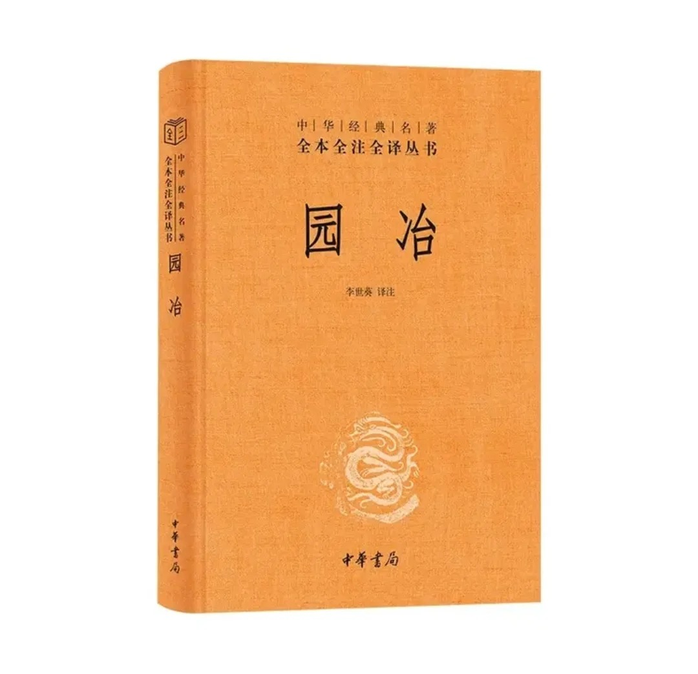

明崇祯七年（1634年），计成完成这部中国第一部系统性的园林艺术理论专著。它不仅总结了园林选址、建筑、堆山、选石、借景等具体建筑技艺，更提出了"虽由人作，宛自天开"的造园哲学，将中国古典园林从实践技艺提升为可传承、可演进的系统理论体系，被誉为"世界造园学最早的名著之一"。

六大维度直观展示中国古典园林第一典籍的理论高度
《园冶》建立了中国古典园林从美学思想到建筑技艺的完整理论框架
最高宗旨："虽由人作，宛自天开"——追求人工创造与自然天成的完美和谐
核心法则："巧于因借，精在体宜"——巧妙利用环境条件，追求整体协调与适宜
设计原则："因地制宜"、"随曲合方"——顺应地形地貌，不拘泥于固定形式
| 分类 | 具体内容 |
|---|---|
| 相地（选址） | 6种类型：山林地、城市地、村庄地、郊野地、傍宅地、江湖地 |
| 掇山（堆山） | 17种类型：园山、厅山、楼山、阁山、书房山、池山、内室山、峭壁山等 |
| 选石 | 16种石材：太湖石、昆山石、宜兴石、龙潭石等，各有适用场景与审美标准 |
界面模糊化：通过灵活的小木作构件，使建筑与自然之间形成渗透关系
功能复合化：同一构件兼具结构、装饰、框景、导视等多重功能
形制自由化：摆脱官式建筑的严格规制，追求"得体合宜"
| 构件类型 | 灵活应用体现 |
|---|---|
| 门窗 | 形式多变：方、圆、圭形、葫芦、汉瓶等数十种，"窗牖无拘，随宜合用" |
| 栏杆 | 绘有100种图样：笔管式、锦葵式、波纹式等，既是防护，又是视觉引导 |
| 挂落飞罩 | 通透空灵：冰裂纹、藤茎式、乱纹式等，"隐约其间"，划分空间不隔绝视线 |
《园冶》建立了从规划到细节的完整造园流程，形成了可操作的系统性方法论：
1. 相地选址 → 立意构思 → 总体布局（立基）
2. 建筑定位（屋宇）→ 空间划分（装折）→ 细部装饰（栏杆、门窗）
3. 山水营造（掇山、选石）→ 界面处理（墙垣、铺地）→ 意境升华（借景）
借景分类：远借、邻借、仰借、俯借、应时而借。强调"借者，园虽别内外，得景则无拘远近"。
历史地位：中国第一部系统性的园林艺术理论专著，世界造园学最早的名著之一。
流传情况：明末清初一度失传，1931年从日本传回国内刊行，重新被发现和重视。
| 对后世影响 | 具体体现 |
|---|---|
| 直接指导 | 明末清初江南私家园林的营造，如苏州拙政园、环秀山庄、无锡寄畅园 |
| 重新发现 | 20世纪30年代后成为中国园林研究的理论基础 |
| 现代价值 | 生态智慧"因地制宜"、空间哲学流动渗透、文化认同重要媒介 |
从不同视角理解《园冶》的独特价值与理论创新
| 维度 | 《营造法式》（宋） | 《园冶》（明） | 本质区别 |
|---|---|---|---|
| 性质 | 官式建筑工程规范 | 园林艺术创作理论 | "法度"与"灵感"之别 |
| 核心 | 大木作的标准化 | 小木作的灵活化 | 结构刚性 vs 空间弹性 |
| 目标 | 控制工料、确保等级 | 营造意境、追求自然 | 管理导向 vs 艺术导向 |
| 空间观 | 明确的等级与边界 | 流动的渗透与借景 | 封闭秩序 vs 开放融合 |
| 方面 | 《园冶》中国园林观 | 西方古典园林观 | 文化根源 |
|---|---|---|---|
| 自然态度 | 模仿并提炼自然 | 征服并规整自然 | 天人合一 vs 人定胜天 |
| 构图逻辑 | 山水画意，散点透视 | 几何轴线，焦点透视 | 写意美学 vs 理性秩序 |
| 时间维度 | 四时之景不同 | 追求永恒不变 | 循环时间观 vs 永恒时间观 |
| 参与方式 | 游观体验，沉浸其中 | 静观欣赏，保持距离 | 身体参与 vs 视觉主导 |
《园冶》不仅是一部技术性的造园手册，更是一本蕴含深刻哲学思想和美学理念的文化经典。它确立了"虽由人作，宛自天开"的造园最高境界，将中国文人对自然的理解、对生活的态度、对美的追求凝聚在园林这一独特载体中。从明代的江南园林到现代的中式景观设计，从苏州的拙政园到纽约的明轩，《园冶》的思想如一条隐形的脉络，持续滋养着东方美学的传承与发展。它不仅是中国古典园林的"语法教科书"，更是理解中国传统自然观、审美观、生活观的重要文化密码。